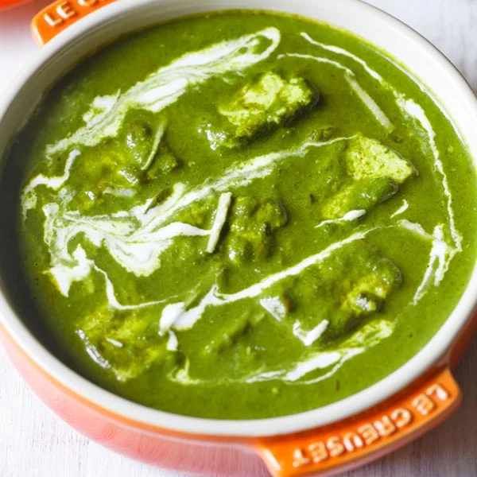

Palak Paneer

Ingredients
- 1 cup of cubed paneer
- 4-5 cups of green spinach
- 1 onion chopped
- 1 teaspoon of minced garlic
- 1/2 teaspoon of minced ginger
- 1 teaspoon of red chilli powder
- 1 teaspoon of coriander powder
- 1/2 teaspoon of jeera cumin powder
- 1/4 teaspoon of turmeric powder
- 1 large pinch of dried fenugreek leaves
- 1 teaspoon of garam masala
- 2 teaspoon of ghee
- 1 pinch of asafoetida
- 1 heaping teaspoon of tomato paste (optional)
- 1 cup of milk
- 1 tablespoon of plain curd (optional)
Procedure
- The first step is to blanch the spinach. Bring a pot of water to a rolling boil and dunk the washed spinach leaves in it. Let it simmer for about 2 mins and then remove. Puree to a smooth paste.
- Drain the water and in the same bowl, heat the ghee or oil. Add the cumin powder and within 5 seconds, add the chopped onions. Saute until golden brown and add the spice powders like coriander powder, turmeric, chilli powder, and hing. Fry for a few seconds, taking care not to burn them spices.
- Next, add the minced ginger and garlic and the tomato paste if using. Mix well and add the pureed spinach.
- Top this off with the milk. Mix well, bring to boil and add the kasuri methi and salt.
- Cook covered for about 6-8 mins until the spinach is completely cooked and spices have blended well into the gravy. Gently add the paneer pieces to the gravy.
- Top off with a tbsp of curd (plain yogurt) if you want the gravy to be thicker. Sprinkle garam masala. Mix well and remove from the stove.
Serve palak paneer hot with naan, roti, or pulao